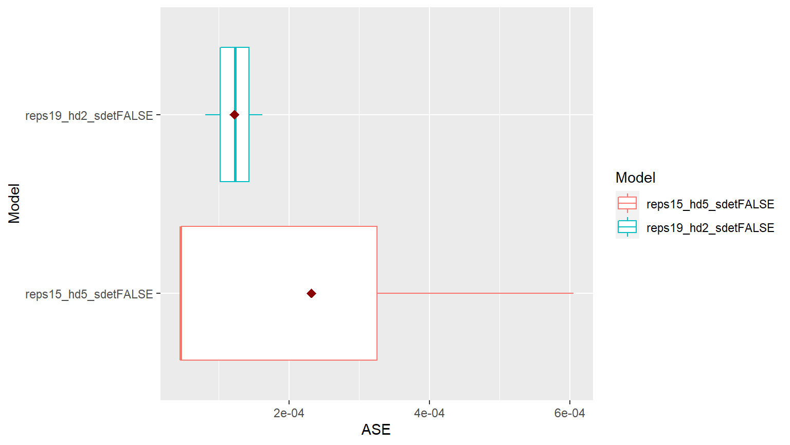

ModelCompareNNforCaret
ModelCompareNNforCaret.RmdSetup Libraries
library(tswgewrapped)
Load Data
file = system.file("extdata", "USeconomic.csv", package = "tswgewrapped", mustWork = TRUE)
USeconomic = read.csv(file, header = TRUE, stringsAsFactors = FALSE, check.names = FALSE)
names(USeconomic) = gsub("[(|)]", "", colnames(USeconomic))
data = USeconomicBuild caret model
Since this process takes some time, I have commented this out for now and saved an already created caret model. However, feel free to uncomment this and run the model build process.
# library(caret) # # # Random Parallel # model = ModelBuildNNforCaret$new(data = data, var_interest = "logGNP", m = 2, # search = 'random', # grid = NA, tuneLength = 2, # batch_size = 132, h = 2, # parallel = TRUE, # seed = 1, # verbose = 1) # # model$summarize_hyperparam_results() # model$plot_hyperparam_results() # # model$summarize_best_hyperparams() # model$summarize_build() # # caret_model = model$get_final_models(subset = 'a')
Load already saved caret model
file = system.file("extdata", "caret_model_batch_ase.rds", package = "tswgewrapped", mustWork = TRUE)
caret_model = readRDS(file)Initialize the ModelCompareMultivariateVAR object
mdl_compare = ModelCompareNNforCaret$new(data = data, var_interest = 'logGNP',
mdl_list = caret_model,
verbose = 1)
#>
#> Computing metrics for: reps15_hd5_sdetFALSE
#> Warning in private$models[[name]]$ASEs = res$ASEs: Coercing LHS to a list
#>
#> Computing metrics for: reps19_hd2_sdetFALSE
#> Warning in private$models[[name]]$ASEs = res$ASEs: Coercing LHS to a list
#> NULLCompare the models
Compare boxplot of ASE values
mdl_compare$plot_boxplot_ases() #> Warning: `fun.y` is deprecated. Use `fun` instead. #> Warning: `show_guide` has been deprecated. Please use `show.legend` #> instead.

#> # A tibble: 6 x 5
#> Model ASE Time_Test_Start Time_Test_End Batch
#> <chr> <dbl> <dbl> <dbl> <dbl>
#> 1 reps15_hd5_sdetFALSE 0.0000449 131 132 1
#> 2 reps15_hd5_sdetFALSE 0.000605 133 134 2
#> 3 reps15_hd5_sdetFALSE 0.0000461 135 136 3
#> 4 reps19_hd2_sdetFALSE 0.000124 131 132 1
#> 5 reps19_hd2_sdetFALSE 0.000163 133 134 2
#> 6 reps19_hd2_sdetFALSE 0.0000810 135 136 3Statistically Compare the models
mdl_compare$statistical_compare() #> Df Sum Sq Mean Sq F value Pr(>F) #> Model 1 1.803e-08 1.803e-08 0.34 0.591 #> Residuals 4 2.121e-07 5.302e-08 #> #> #> Tukey multiple comparisons of means #> 95% family-wise confidence level #> #> Fit: aov(formula = ASE ~ Model, data = results) #> #> $Model #> diff lwr #> reps19_hd2_sdetFALSE-reps15_hd5_sdetFALSE -0.0001096261 -0.0006316118 #> upr p adj #> reps19_hd2_sdetFALSE-reps15_hd5_sdetFALSE 0.0004123596 0.5911161 #> Call: #> aov(formula = ASE ~ Model, data = results) #> #> Terms: #> Model Residuals #> Sum of Squares 1.802683e-08 2.120736e-07 #> Deg. of Freedom 1 4 #> #> Residual standard error: 0.0002302572 #> Estimated effects may be unbalanced
Simple Forecasts (with various options)
This is not currently supported since it needs future values to be passed and we dont have these values yet (unless we forecast them). We will add this functionality in the future.
mdl_compare$plot_simple_forecasts() #> This function is not supported for nnfor::mlp at this time.

Plot and compare the forecasts per batch
mdl_compare$plot_batch_forecasts()
#> $forecasts
#> # A tibble: 148 x 5
#> Model Time f ll ul
#> <chr> <dbl> <dbl> <dbl> <dbl>
#> 1 reps15_hd5_sdetFALSE 131 8.23 8.23 8.23
#> 2 reps15_hd5_sdetFALSE 132 8.23 8.23 8.23
#> 3 reps15_hd5_sdetFALSE 133 8.22 8.22 8.22
#> 4 reps15_hd5_sdetFALSE 134 8.22 8.22 8.22
#> 5 reps15_hd5_sdetFALSE 135 8.26 8.26 8.26
#> 6 reps15_hd5_sdetFALSE 136 8.27 8.27 8.27
#> 7 reps19_hd2_sdetFALSE 131 8.23 8.23 8.23
#> 8 reps19_hd2_sdetFALSE 132 8.24 8.24 8.24
#> 9 reps19_hd2_sdetFALSE 133 8.23 8.23 8.23
#> 10 reps19_hd2_sdetFALSE 134 8.23 8.23 8.23
#> # ... with 138 more rows
#>
#> $batch_rects
#> xstart xend Batch
#> 1 131 132 1
#> 2 133 134 1
#> 3 135 136 1Plot and compare the ASEs per batch
mdl_compare$plot_batch_ases() #> Loading required namespace: patchwork #> Warning: Removed 260 row(s) containing missing values (geom_path).
#> $data
#> Time Data
#> 1 1 7.249073
#> 2 2 7.245084
#> 3 3 7.257003
#> 4 4 7.271565
#> 5 5 7.292746
#> 6 6 7.303641
#> 7 7 7.316880
#> 8 8 7.325610
#> 9 9 7.323633
#> 10 10 7.328175
#> 11 11 7.328897
#> 12 12 7.339927
#> 13 13 7.348137
#> 14 14 7.347557
#> 15 15 7.353402
#> 16 16 7.337783
#> 17 17 7.317279
#> 18 18 7.322643
#> 19 19 7.346010
#> 20 20 7.369412
#> 21 21 7.381751
#> 22 22 7.400621
#> 23 23 7.396028
#> 24 24 7.404523
#> 25 25 7.421537
#> 26 26 7.418661
#> 27 27 7.419620
#> 28 28 7.411012
#> 29 29 7.421357
#> 30 30 7.433726
#> 31 31 7.447926
#> 32 32 7.470167
#> 33 33 7.483188
#> 34 34 7.493540
#> 35 35 7.502793
#> 36 36 7.501137
#> 37 37 7.514582
#> 38 38 7.528332
#> 39 39 7.545654
#> 40 40 7.552815
#> 41 41 7.574918
#> 42 42 7.583451
#> 43 43 7.593475
#> 44 44 7.597747
#> 45 45 7.619184
#> 46 46 7.633563
#> 47 47 7.649359
#> 48 48 7.672106
#> 49 49 7.691702
#> 50 50 7.694302
#> 51 51 7.704496
#> 52 52 7.709398
#> 53 53 7.715034
#> 54 54 7.720994
#> 55 55 7.735302
#> 56 56 7.740925
#> 57 57 7.752464
#> 58 58 7.769336
#> 59 59 7.777080
#> 60 60 7.776115
#> 61 61 7.790075
#> 62 62 7.791440
#> 63 63 7.796963
#> 64 64 7.792968
#> 65 65 7.786801
#> 66 66 7.785929
#> 67 67 7.798031
#> 68 68 7.788958
#> 69 69 7.815449
#> 70 70 7.815368
#> 71 71 7.820480
#> 72 72 7.820440
#> 73 73 7.842122
#> 74 74 7.861380
#> 75 75 7.871731
#> 76 76 7.890321
#> 77 77 7.913521
#> 78 78 7.916078
#> 79 79 7.915093
#> 80 80 7.924000
#> 81 81 7.918410
#> 82 82 7.921245
#> 83 83 7.908130
#> 84 84 7.899302
#> 85 85 7.879556
#> 86 86 7.889684
#> 87 87 7.906510
#> 88 88 7.920338
#> 89 89 7.938945
#> 90 90 7.943392
#> 91 91 7.947537
#> 92 92 7.957457
#> 93 93 7.971086
#> 94 94 7.987083
#> 95 95 8.006967
#> 96 96 8.004399
#> 97 97 8.013178
#> 98 98 8.044273
#> 99 99 8.052806
#> 100 100 8.065139
#> 101 101 8.065171
#> 102 102 8.064291
#> 103 103 8.073216
#> 104 104 8.071312
#> 105 105 8.081289
#> 106 106 8.057377
#> 107 107 8.058042
#> 108 108 8.070656
#> 109 109 8.089820
#> 110 110 8.086472
#> 111 111 8.090893
#> 112 112 8.076919
#> 113 113 8.061613
#> 114 114 8.064605
#> 115 115 8.056585
#> 116 116 8.058106
#> 117 117 8.066710
#> 118 118 8.088961
#> 119 119 8.103615
#> 120 120 8.121213
#> 121 121 8.146622
#> 122 122 8.159947
#> 123 123 8.166387
#> 124 124 8.170525
#> 125 125 8.182420
#> 126 126 8.188467
#> 127 127 8.198584
#> 128 128 8.205874
#> 129 129 8.221291
#> 130 130 8.219218
#> 131 131 8.221828
#> 132 132 8.225423
#> 133 133 8.236606
#> 134 134 8.248791
#> 135 135 8.259795
#> 136 136 8.274612
#>
#> $ASEs
#> # A tibble: 272 x 7
#> # Groups: Model [2]
#> Time Model ASE.x ASE.y Batch Index ASE
#> <dbl> <chr> <dbl> <dbl> <dbl> <chr> <dbl>
#> 1 1 reps15_hd5_sdetFALSE 0 NA NA <NA> NA
#> 2 2 reps15_hd5_sdetFALSE 0 NA NA <NA> NA
#> 3 3 reps15_hd5_sdetFALSE 0 NA NA <NA> NA
#> 4 4 reps15_hd5_sdetFALSE 0 NA NA <NA> NA
#> 5 5 reps15_hd5_sdetFALSE 0 NA NA <NA> NA
#> 6 6 reps15_hd5_sdetFALSE 0 NA NA <NA> NA
#> 7 7 reps15_hd5_sdetFALSE 0 NA NA <NA> NA
#> 8 8 reps15_hd5_sdetFALSE 0 NA NA <NA> NA
#> 9 9 reps15_hd5_sdetFALSE 0 NA NA <NA> NA
#> 10 10 reps15_hd5_sdetFALSE 0 NA NA <NA> NA
#> # ... with 262 more rowsRaw Data and Metrics
ASEs = mdl_compare$get_tabular_metrics(ases = TRUE) print(ASEs) #> # A tibble: 6 x 5 #> Model ASE Time_Test_Start Time_Test_End Batch #>#> 1 reps15_hd5_sdetFALSE 0.0000449 131 132 1 #> 2 reps15_hd5_sdetFALSE 0.000605 133 134 2 #> 3 reps15_hd5_sdetFALSE 0.0000461 135 136 3 #> 4 reps19_hd2_sdetFALSE 0.000124 131 132 1 #> 5 reps19_hd2_sdetFALSE 0.000163 133 134 2 #> 6 reps19_hd2_sdetFALSE 0.0000810 135 136 3
forecasts = mdl_compare$get_tabular_metrics(ases = FALSE) print(forecasts) #> # A tibble: 148 x 5 #> Model Time f ll ul #>#> 1 reps15_hd5_sdetFALSE 131 8.23 8.23 8.23 #> 2 reps15_hd5_sdetFALSE 132 8.23 8.23 8.23 #> 3 reps15_hd5_sdetFALSE 133 8.22 8.22 8.22 #> 4 reps15_hd5_sdetFALSE 134 8.22 8.22 8.22 #> 5 reps15_hd5_sdetFALSE 135 8.26 8.26 8.26 #> 6 reps15_hd5_sdetFALSE 136 8.27 8.27 8.27 #> 7 reps19_hd2_sdetFALSE 131 8.23 8.23 8.23 #> 8 reps19_hd2_sdetFALSE 132 8.24 8.24 8.24 #> 9 reps19_hd2_sdetFALSE 133 8.23 8.23 8.23 #> 10 reps19_hd2_sdetFALSE 134 8.23 8.23 8.23 #> # ... with 138 more rows